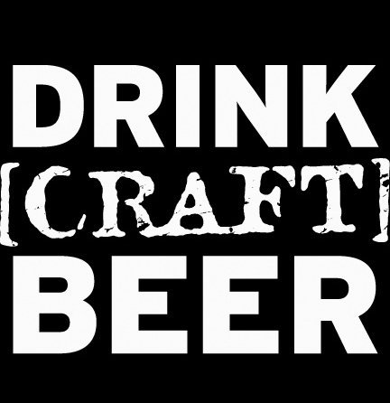

Dallas-Fort Worth is home to numerous craft breweries who make creative, delicious, and interesting craft beer. In this site, you can find out about the breweries in DFW and information about the beers that they produce. You can even find out what glass to use and which types of food to pair with each beer. So, look through the site and find your next favorite beer!